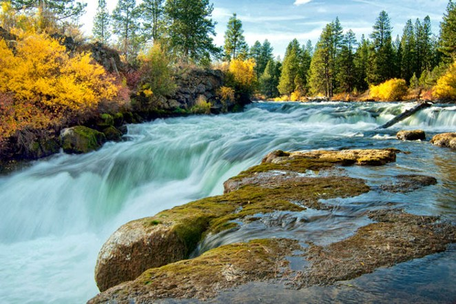
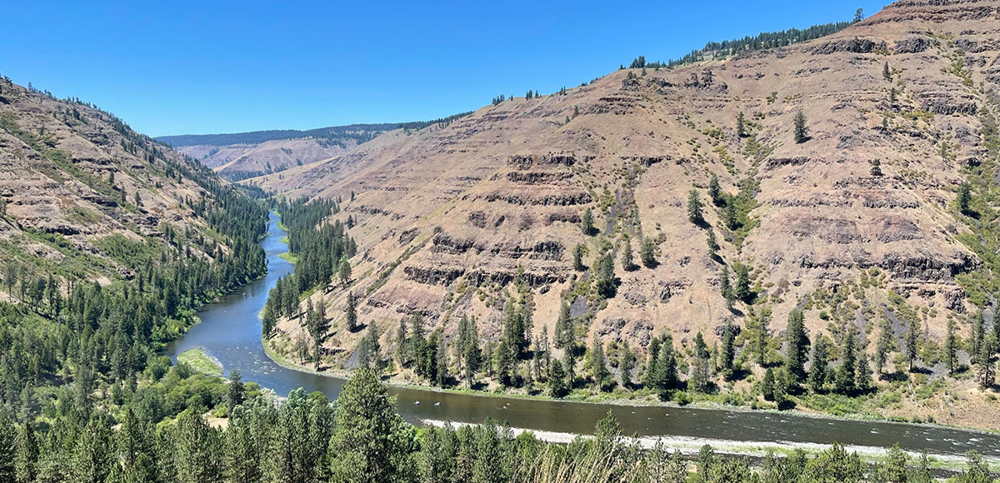
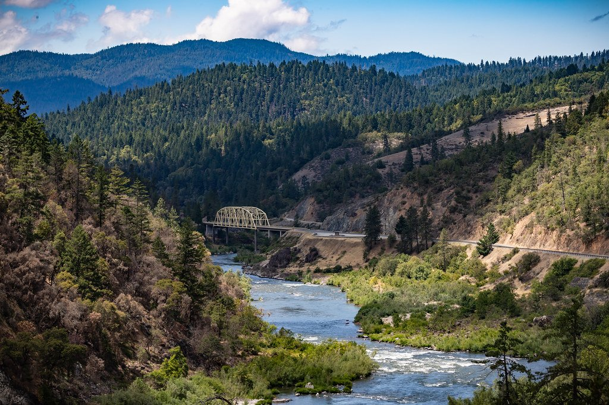

The Deschutes River in central Oregon is a major tributary of the Columbia River. The river provides much of the drainage on the eastern side of the Cascade Range in Oregon, gathering many of the tributaries that descend from the drier, eastern flank of the mountains. The Deschutes provided an important route to and from the Columbia for Native Americans for thousands of years, and then in the 19th century for pioneers on the Oregon Trail. The river flows mostly through rugged and arid country, and its valley provides a cultural heart for central Oregon. Today the river supplies water for irrigation and is popular in the summer for whitewater rafting and fishing.
The Grande Ronde River is a tributary of the Snake River, 182 miles (293 km) long,[6] in northeastern Oregon and southeastern Washington in the United States. It drains an area southeast of the Blue Mountains and northwest of the Wallowa Mountains, on the Columbia Plateau. It flows through the agricultural Grande Ronde Valley in its middle course and through a series of scenic canyons in its lower course.


The Rogue River in southwestern Oregon in the United States flows about 215 miles (346 km) in a generally westward direction from the Cascade Range to the Pacific Ocean. Known for its salmon runs, whitewater rafting, and rugged scenery, it was one of the original eight rivers named in the Wild and Scenic Rivers Act of 1968. Beginning near Crater Lake, which occupies the caldera left by the explosive volcanic eruption and collapse of Mount Mazama, the river flows through the geologically young High Cascades and the older Western Cascades, another volcanic province.